Clinical Approach to the Knee, Part 1
- The knee has three articulations: the medial and lateral tibiofemoral joints and the patellofemoral joint. The fibula isn't part of it. It's essentially two bones stacked on top of each other, so the bones give it little stability. It depends on its ligaments and above all its muscles, especially the quadriceps.
- Medial collateral ligament (MCL): a broad, flat band whose deep fibres are fixed to the medial meniscus, so the two get hurt together. Lateral collateral ligament (LCL): a round cord to the fibular head, separate from the lateral meniscus. A valgus force tears the MCL, which is very common. A varus force tears the LCL, which is rare on its own and goes with PCL injuries.
- The cruciates are named for where they attach on the tibia. The anterior cruciate (ACL) is tight in extension and stops the tibia sliding forward under the femur (Lachman, anterior drawer). The posterior cruciate (PCL) is the stronger one, tight in flexion, and stops the tibia sliding back (posterior drawer, sag sign). The PCL tears in the dashboard injury.
- ACL tear: a non-contact plant-and-pivot (60–80%), a "pop", the knee gives way, and swelling within hours (hemarthrosis). The pain is lateral, from the bone bruise. Women are affected 4.5 times as often. Lachman is the best test; x-ray only to exclude a fracture. Physio, then reconstruction; return to play at 9–12 months.
- The menisci are fibrocartilage that deepens the tibial plateau and absorbs shock. The medial one is C-shaped and tied to the MCL, so it tears more often; the lateral is nearly circular and mobile. The periphery is vascular and can heal or be repaired; the centre is avascular, fed by synovial fluid, and doesn't heal.
- Meniscal tear: a twist on a planted foot (a big force in the young, a trivial one in a degenerative knee). Joint line pain, delayed swelling, locking or catching. Effusion and joint line tenderness matter most. Degenerative tears get active physio; traumatic tears in the young get an earlier MRI and surgical referral. The unhappy triad is MCL + medial meniscus + ACL.
Learning Objectives
- Identify the bones and landmarks of the knee and the structures that stabilize it: the capsule, collateral and cruciate ligaments, and menisci.
- Explain what each ligament prevents, how it's injured and how it's tested.
- Describe the presentation, evaluation, treatment and return to play of ACL, PCL, MCL, LCL and meniscal injuries, and the unhappy triad.
Dr. Charys Martin covers the anatomy: osteology and ligaments (20 minutes), and the menisci (9 minutes, plus a knowledge-check feedback video). Dr. Jordan VanderEnde covers the injuries: ligament injuries (10 minutes) and meniscal injuries (11 minutes). About an hour in all. Each section is its own lesson so the module works as a reference. Together with Part 2, the Leg and the Foot & Ankle module, it's the prep for next week's Knee, Leg, Ankle & Foot lab.
Osteology and Ligaments of the Knee
Dr. Martin's recording and its knowledge checks.
Bones of the Knee
The femur, tibia and fibula meet here, along with the patella, a sesamoid bone that sits inside the quadriceps tendon. There are three articulations: lateral femoral condyle with lateral tibial condyle, medial with medial, and patella with femur. Most people guess the fibula is the third, but the fibula plays no part in the knee joint.
| Landmark | Why it matters |
|---|---|
| Femoral condyles (medial, lateral) | The articulating surfaces. They're larger at the back, where they roll on the tibia in flexion. |
| Femoral epicondyles | Where the collateral ligaments attach |
| Intercondylar fossa (notch) | The gap between the femoral condyles, where the cruciate ligaments sit |
| Tibial condyles and the intercondylar eminence | The eminence is the bumpy ridge between the tibial condyles, where ligaments attach. Together they form the tibial plateau, the top of the tibia. |
| Tibial tuberosity | Where the patellar tendon ends |
| Patellar surface of the femur | Covered in articular (hyaline) cartilage, which makes the patellofemoral joint space seen on x-ray |
| Knee x-ray view | What it's good for |
|---|---|
| AP and lateral | The standard views: condyles, eminence, tibial tuberosity, patella |
| Skyline (axial) | The patellofemoral joint and patellar fractures |
| Tunnel | Loose bodies or bone fragments in the joint |
Because x-ray images are superimposed, you can see the patella's inferior pole through the femur even on a posterior view.
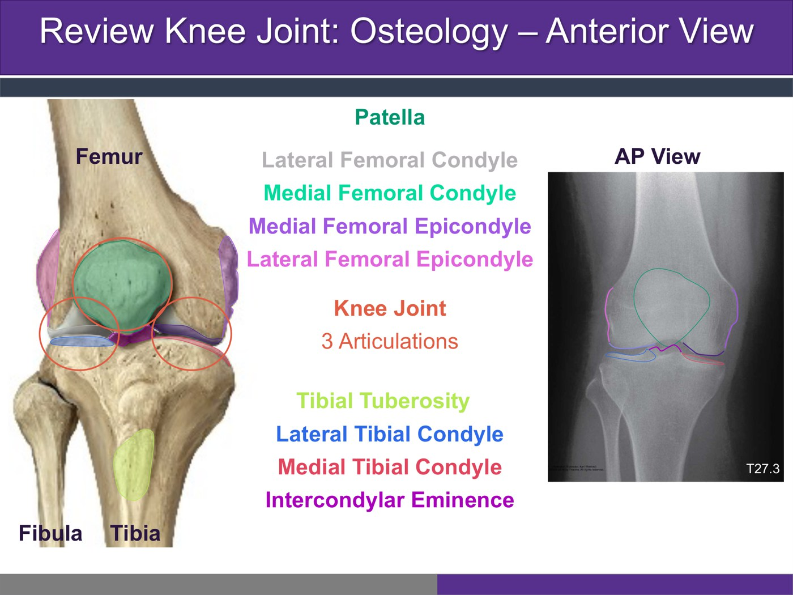
Anterior view and AP x-ray. Slide from the deck.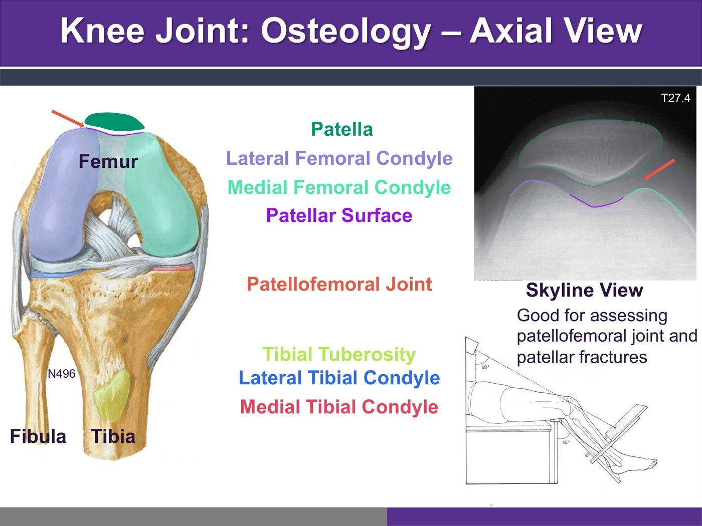
The skyline view of the patellofemoral joint. Slide from the deck.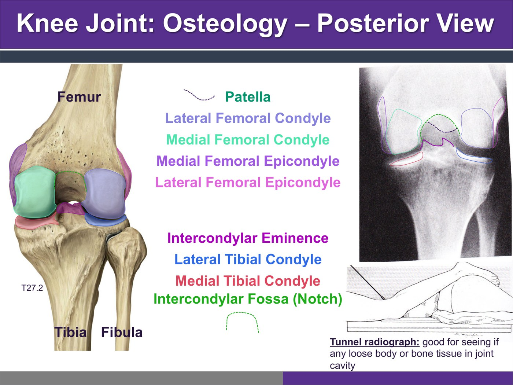
Posterior view and the tunnel radiograph. Slide from the deck.The Capsule and What Holds the Knee Together
Recall the three sources of joint stability from MSK basics: the bony fit, the passive stabilizers (ligaments) and the dynamic stabilizers (muscles). At the knee the surfaces are incongruent, so compared with the hip the bony fit is very unstable. The knee relies on its ligaments and, most of all, on the muscles around it, especially the quadriceps. It's the largest joint in the body, with the largest capsule and synovial membrane.
| Side | Reinforced by |
|---|---|
| Anterior | The quadriceps tendon, which actually replaces the capsule here, with the patella inside it. Aponeurotic extensions of vastus medialis and lateralis form the medial and lateral patellar retinacula. The IT band blends in laterally. |
| Medial | The medial (tibial) collateral ligament: strong, long, broad and flat, femoral epicondyle to tibia, with deep fibres firmly attached to the medial meniscus. Muscles add support: the pes anserinus (sartorius, gracilis, semitendinosus: "SGT"), semimembranosus and the medial head of gastrocnemius. |
| Lateral | The lateral (fibular) collateral ligament: a strong, rounded, cord-like ligament from the lateral femoral epicondyle to the head of the fibula. It's a distinct structure, attached to nothing else; the popliteus tendon passes deep to it. Biceps femoris and the IT band add support. |
| Posterior | A true fibrous capsule, without the tendon extensions seen in front. The oblique popliteal ligament is an expansion of the semimembranosus tendon. The arcuate popliteal ligament runs from the fibular head over popliteus. Popliteus and the gastrocnemius tendons give dynamic support. |
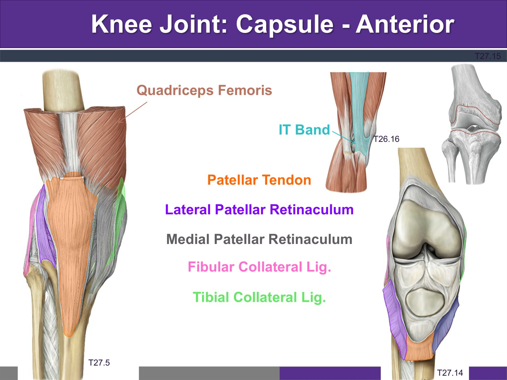
The front: the quadriceps tendon and retinacula form the capsule. Slide from the deck.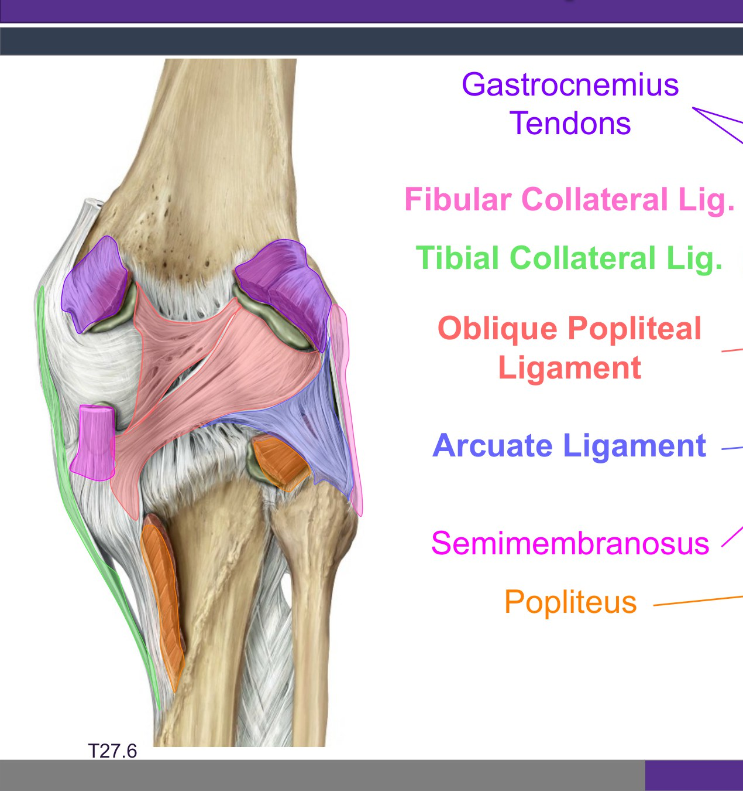
The back: a true fibrous capsule. Slide from the deck (the cadaveric photo beside it is cropped off).Some call the part from the patella to the tibial tuberosity the patellar ligament. Dr. Martin disagrees: a sesamoid bone forms inside a tendon, so the whole thing is the patellar tendon. She won't mark "patellar ligament" wrong, but thinking of it as one tendon makes the anatomy make sense.
| Supply | Detail (from the notes) |
|---|---|
| Nerves | Hilton's law: a joint is supplied by the nerves to the muscles that act on it. For the knee that's the femoral and sciatic nerves, plus articular branches of the obturator and saphenous nerves. |
| Arteries | The genicular anastomosis: four genicular branches of the popliteal artery (superior and inferior, medial and lateral), with collateral flow from the descending branch of the lateral circumflex femoral artery (see the Gluteal Region & Thigh) |
The Collateral and Cruciate Ligaments
The cruciates are named for where they attach on the tibial plateau. The ACL rises from the front of the plateau and runs back and laterally to the inner side of the lateral femoral condyle. The PCL rises from the back of the plateau and runs forward and medially to the inner side of the medial femoral condyle. They cross, hence "cruciate". Both are inside the joint capsule but outside the synovial membrane, which wraps around in front of them; synovial fluid would break down their tissue.
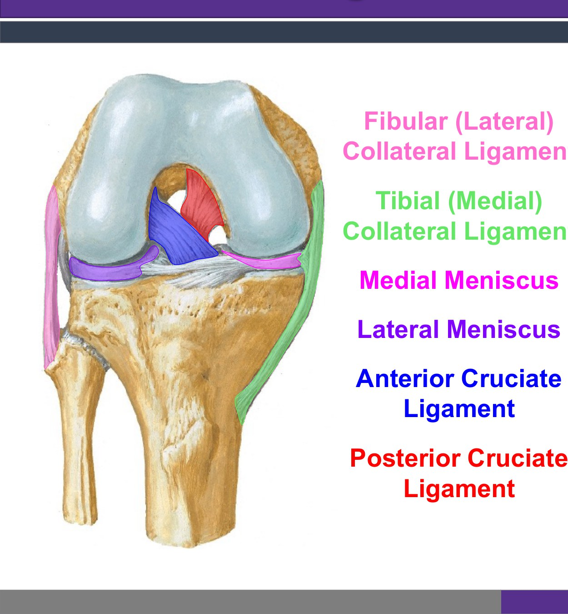
Ligaments from the front, knee flexed. Slide from the deck (cadaveric photo cropped off).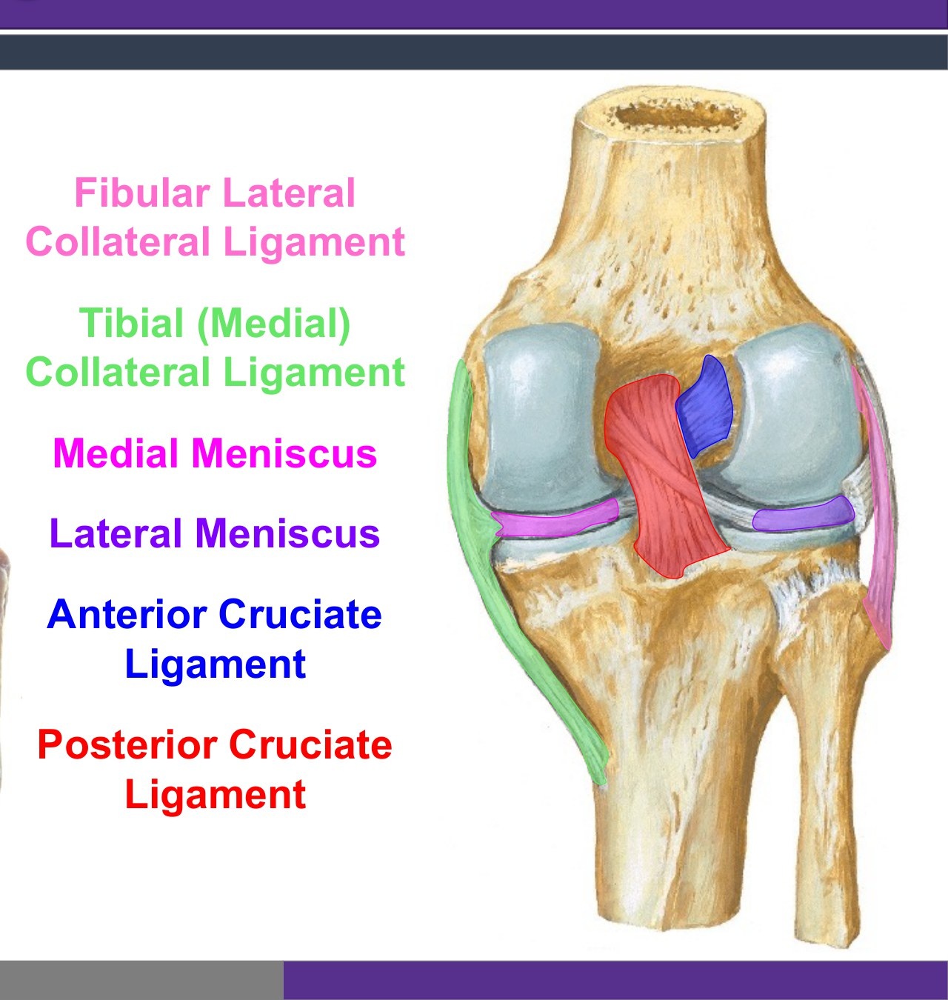
Ligaments from behind. Note how separate the LCL is and how big the PCL is. Slide from the deck (cadaveric photo cropped off).| ACL | PCL | |
|---|---|---|
| Strength | Thinner and weaker; torn more often | Broader and stronger; torn less often |
| Tight in | Extension (lax in flexion) | Flexion (lax in extension) |
| Foot planted (tibia fixed) | Stops the femur moving posteriorly on the tibia | Stops the femur moving anteriorly on the tibia, which is why it's busy when you walk or run downhill |
| Foot free (femur fixed) | Stops the tibia moving anteriorly under the femur | Stops the tibia moving posteriorly under the femur |
| Also (notes) | Resists hyperextension and excessive medial rotation of the tibia | — |
| Tests | Lachman (knee at about 30°, draw the tibia forward): the gold standard. Anterior drawer (hip at 45°, knee at 90°, check the hamstrings are relaxed, draw the tibia forward). Pivot shift. | Posterior drawer (push the tibia back), sag sign, reverse Lachman |
A cruciate only "does" something to one bone when the other bone is fixed, so always describe it that way. Dr. Martin pictures a planted foot, as in a sports injury: the tibia is fixed while the femur keeps going or gets hit. Do the same in clinical skills. In the Lachman and drawer tests, ask yourself which bone you're fixing and which you're moving. You hold the femur and pull the tibia forward to test the ACL, or push it back to test the PCL.
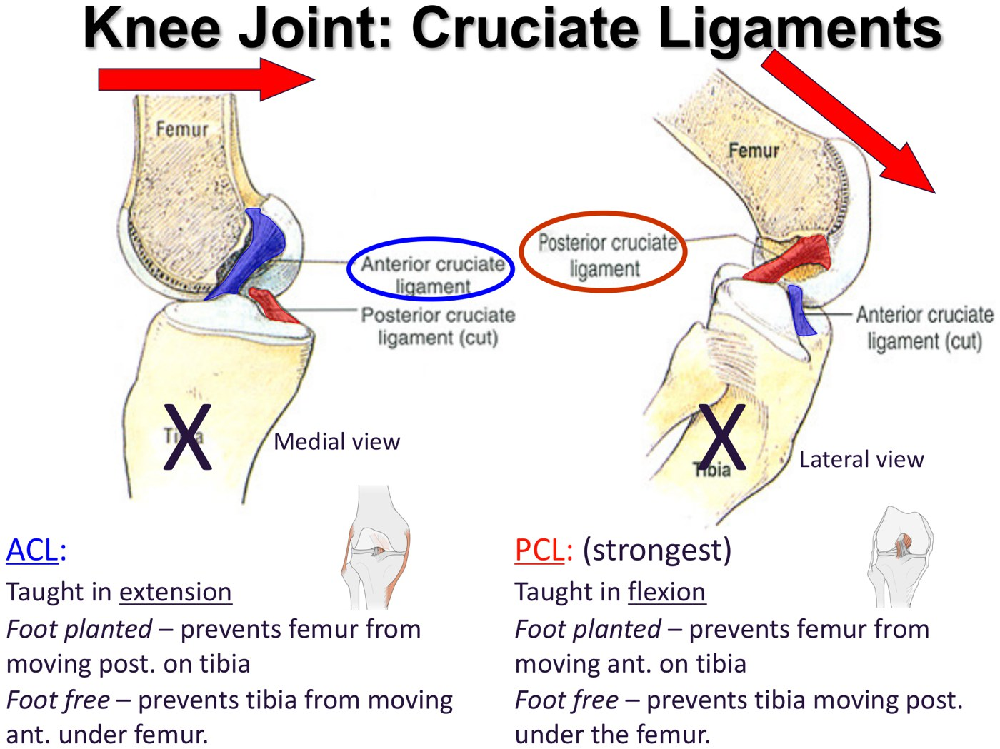
What each cruciate stops. Slide from the deck.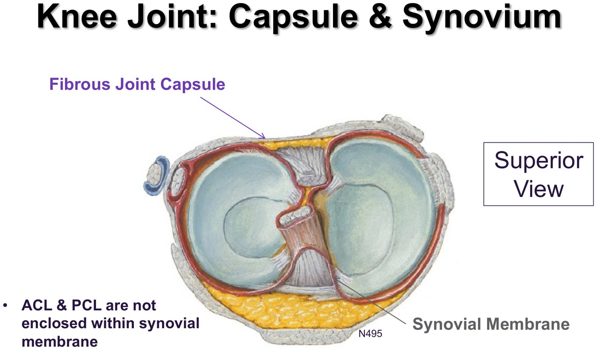
The cruciates are outside the synovial membrane. Slide from the deck (Netter).Because the PCL is so strong, it's injured less often. When it goes, it's usually a dashboard injury. A seated driver has the knee flexed; the dashboard hits the front of the tibia just below the tuberosity and drives the tibia backward under the femur. That can rupture the PCL. The force is big enough to injure the patellar tendon or avulse the tibial tuberosity as well.
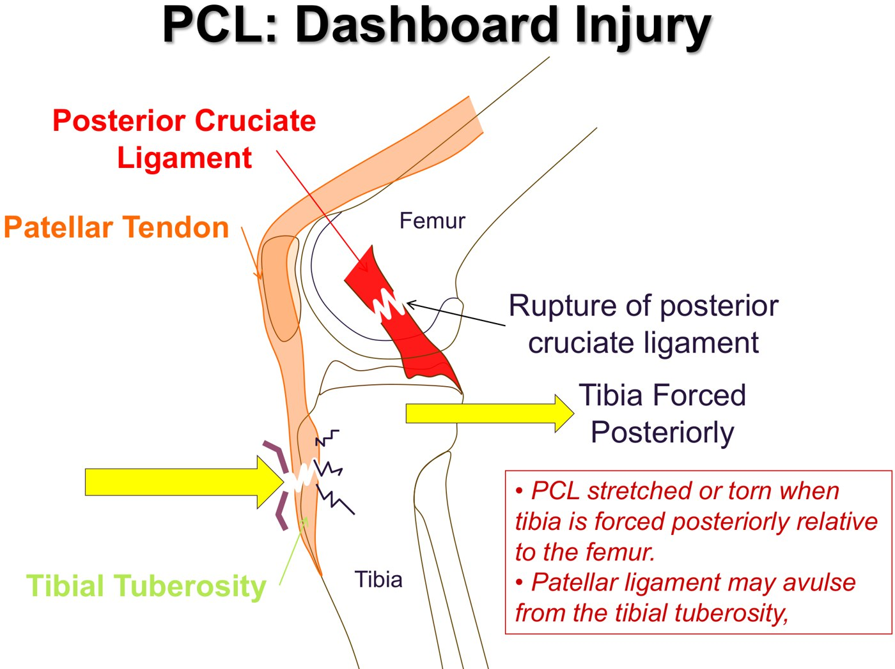
Knowledge checks
Label the knee image (anterior view): femur, tibia and fibula. The fibula is on the outside of the leg, so it's a right knee.
A rugby fly half plants her lead right leg and rotates her torso to the left to pass the ball. An opponent tackles the lateral side of that lead leg. Which ligament worries you most? → the medial (tibial) collateral ligament. A blow to the outside of a planted leg is a valgus force, which opens the medial side.
Her MCL has excess laxity, and now you're worried about her ACL. How do you test it? → draw her tibia anteriorly under her femur, testing the ligament by asking it to do its job. Excess laxity compared with the other side means it's damaged.
Ligament Injuries
Dr. VanderEnde's recording.
ACL Injury
Knee case 1: a pivoting injury
A 27-year-old football player plants his left foot and pivots to change direction to the right. He feels his knee "move" as it gives way, collapses, and can't bear weight because of significant pain and swelling. The video shows a player injured exactly this way while celebrating. → an ACL tear.
| ACL injury | |
|---|---|
| Risk factors | Female (4.5:1); pivoting sports (football, rugby, soccer; much less in running or cycling); anatomic and biomechanical factors |
| Mechanism | Non-contact in 60–80%: cutting or pivoting while decelerating. The pivot adds rotation, with the femur turning externally and the tibia internally, which loads the ACL until it snaps. Contact in about 30%: a direct blow causing hyperextension or valgus, often injuring the MCL too. |
| Presentation | A "pop": it isn't the ligament snapping but the lateral femoral condyle slamming back onto the tibial plateau. That bone contusion is also the main source of pain, so the pain is often lateral. Immediate swelling (hemarthrosis). A sense of instability or "giving out". |
| Evaluation | The history often makes the diagnosis. Lachman has the best sensitivity and specificity; the anterior drawer is clinically not as good; the pivot shift is done mostly in the operating room. X-rays rule out fractures and are usually normal. MRI if you can't tell on exam, or for surgical planning. |
| Treatment | PRICE (protected rest, ice, compression, elevation), weight bearing as tolerated, crutches as needed (often a couple of weeks before they trust the knee). Physio is crucial: it keeps range of motion and prevents quadriceps disuse atrophy, which makes recovery much harder. Refer to orthopedics for reconstruction. The graft can be patellar tendon, semitendinosus or gracilis tendon, or donor (cadaveric) or bovine tissue, depending on the surgeon and the patient. |
| Return to play | 9–12 months after surgery, closer to 12 for most people (some pros go back sooner); a 3–6% reinjury rate |
PCL Injury
| PCL injury | |
|---|---|
| Mechanism | A direct blow to the anterior tibia with the knee flexed (the dashboard injury), or hyperextension |
| Presentation | Poorly defined pain, sometimes posterior; minimal swelling. Much less common than ACL tears, and often associated with meniscal and chondral injuries. |
| Evaluation | History (a flexed knee hit on the tibia) and exam: posterior drawer, sag sign, reverse Lachman. X-rays and stress x-rays show the sag and help grade it. MRI looks for the associated injuries, especially a posterolateral corner injury. |
| Treatment | Physio is generally sufficient, plus PCL bracing. Surgical reconstruction if conservative care fails, if there's rotatory instability, or with posterolateral corner injuries. |
| Return to play | About 50% return to the same or a higher level of activity |
MCL and LCL Injuries
| MCL (medial) | LCL (lateral) | |
|---|---|---|
| How common | Very common | Uncommon, especially in isolation |
| Cause | Almost always a collision; a valgus force (a blow to the outside of the knee) stretches the medial side | Almost always a collision; a varus force (high energy). Blows to the inside of the knee are rarer, which is why LCL injuries are rarer. |
| Swelling | Minimal to none | None in isolation |
| Associations | Sometimes medial meniscal tears, since its fibres attach to the meniscus. A complete tear often comes with an ACL tear. | PCL injuries (it isn't attached to the lateral meniscus, so meniscal tears are less linked) |
| Severity | Like any ligament injury, from a sprain (the ligament is still intact) to a complete tear | |
| Exam (notes) | Valgus stress on the flexed knee | Varus stress on the flexed knee |
| Treatment | Early range of motion and bracing, plus strengthening for stability | Bracing; surgical repair if there are other injuries or instability |
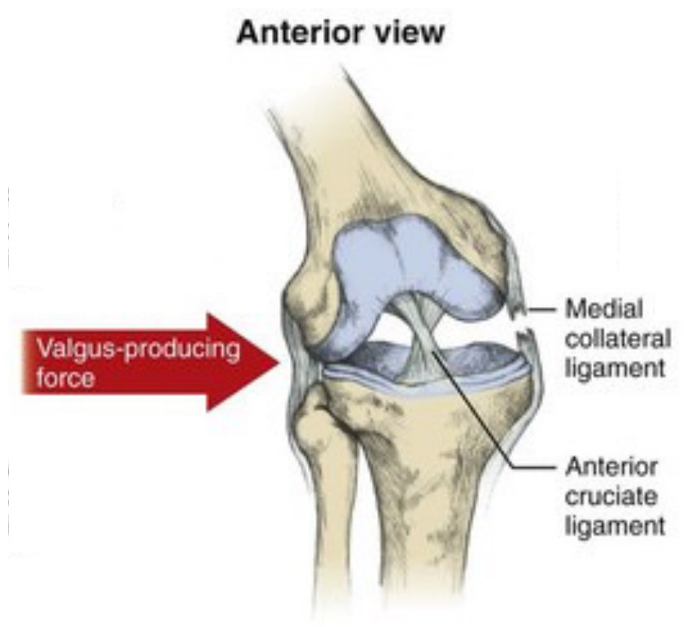
Valgus force: the MCL tears. Slide from the deck.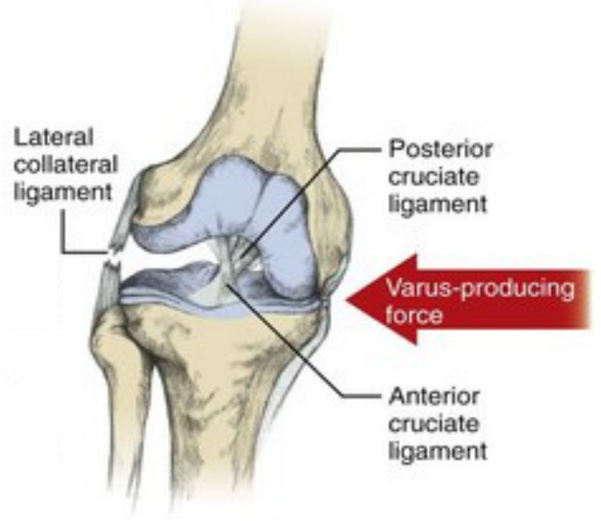
Varus force: the LCL tears. Slide from the deck.Knowledge check
A basketball player comes down from a jump shot and an opponent lands on the outside of her knee, forcing her lower leg away from her body. She has immediate medial knee pain with minimal swelling. → MCL: a valgus force sprains it. The ACL can tear as part of the unhappy triad, but that usually means significant swelling and a higher-energy mechanism. The PCL goes with hyperextension or dashboard injuries, the LCL with varus force.
The Menisci
Dr. Martin's recording and its knowledge-check feedback.
Meniscus Anatomy and Function
Knee case 2: a twisting injury
A 23-year-old hockey player falls awkwardly on the ice with his skate caught under another player. His knee rotates and he has immediate medial pain. There's no obvious swelling at first, but a moderate amount develops later that night. → a meniscal tear.
The menisci are fibrocartilage. They're thick at the margins and thin toward the centre, which makes the femoral and tibial surfaces fit better. Dr. Martin's image: they turn the tibial plateau from a dinner plate into a pasta bowl. They deepen and stabilize the joint and act as shock absorbers for this heavily loaded joint. They're firmly attached in the middle (the intercondylar area) and movable at their outer margins. A transverse ligament links them in front so they move together as the femur rolls; you don't need its name.
| Medial meniscus | Lateral meniscus | |
|---|---|---|
| Shape | C-shaped, broader posteriorly | Nearly circular, smaller |
| Attachment | Firmly adhered to the MCL, so less mobile | Freely movable, separate from the LCL; the popliteus tendon passes nearby |
| Injury | Torn more often, usually along with the MCL | Less susceptible to injury |
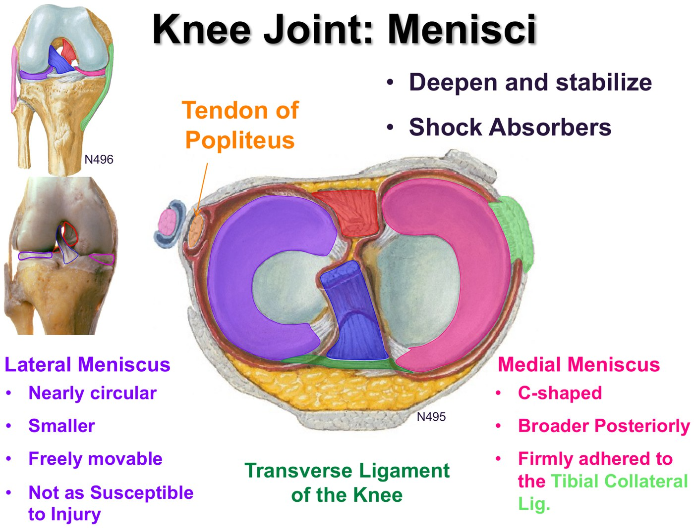
The menisci from above. Slide from the deck (Netter).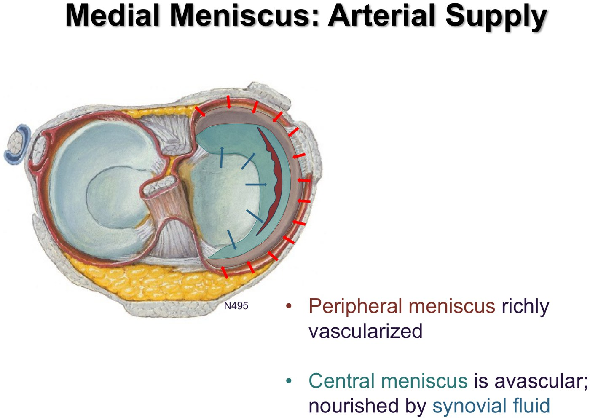
Vascular rim, avascular centre. Slide from the deck (Netter).Fibrocartilage has no blood supply of its own. The peripheral meniscus is richly supplied from the surrounding soft tissue, so a tear there can heal and can be repaired. The central meniscus is avascular and is nourished only by synovial fluid, so a tear there won't heal on its own. Between the two is a watershed zone: the red–red, red–white and white–white zones.
Locking and Unlocking the Knee
In the last 15–20° of extension, the shapes of the condyles and menisci make the femur rotate medially on the tibia. If the foot is free, the tibia rotates laterally instead; you can see it if you watch your shin as you straighten your knee sitting down. This screw-home mechanism tightens the ligaments, especially the ACL, MCL and LCL, and locks the knee for quiet standing with little muscle work, like the hip screwing into the acetabulum in extension. To unlock it, popliteus contracts and rotates the femur laterally about 5° before flexion can start. It also pulls the lateral meniscus back during flexion.
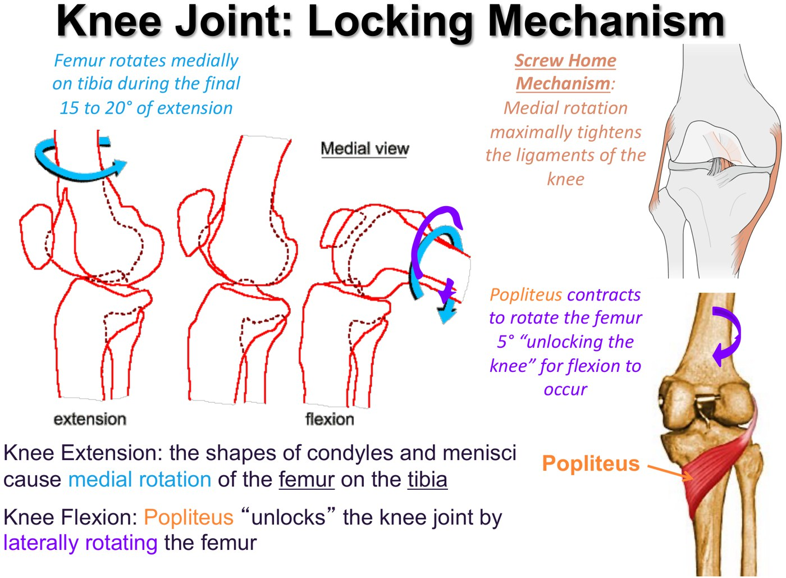
Locking out for a short spell of quiet standing is perfectly fine. Over long periods of standing, though, active muscles keep the blood circulating so it doesn't pool in the legs. In sport, a locked knee that gets bumped is more likely to be injured than one held by contracting muscles.
Knowledge check
Label the dissected knee (a cadaveric photo, so it isn't shown here). It's a right knee seen from behind, with the fibula on the lateral side. A is the lateral collateral ligament and B the medial collateral ligament. C is the lateral meniscus, the disc shape, clearly separate from A. D is the medial meniscus, which flows straight into the MCL. E and F are the ACL and PCL, identified by where they attach on the tibial plateau: front and back.
Meniscal Injuries
Dr. VanderEnde's recording.
Meniscal Tears
| Meniscal injury | |
|---|---|
| Mechanism | It depends on age and degeneration. A young knee with no degenerative change needs a bigger, higher-velocity injury. A degenerative knee is inherently less stable, so something as small as planting a foot and twisting while getting out of a car can tear it. Usually it's rotation or twisting with the foot planted. |
| Presentation | Medial or lateral joint line pain, right after the injury or delayed (in degenerative tears often by a day or two). Delayed or intermittent swelling: a little discomfort, then they wake the next day with a swollen, painful knee. Mechanical symptoms (locking, catching) aren't always present but are worth asking about, along with any loss of end range. |
| Exam | The two biggest findings are a joint effusion and joint line tenderness. McMurray and Thessaly tests exist, but they're not very sensitive or specific; as usual, many tests means none is great. So lean on the mechanism, the effusion and the tenderness. |
| Imaging | X-rays are usually normal, especially in the young, but they show how much OA a degenerative knee has. MRI if conservative treatment is failing or a large tear is suspected; consider it earlier in a young patient with a significant injury. |
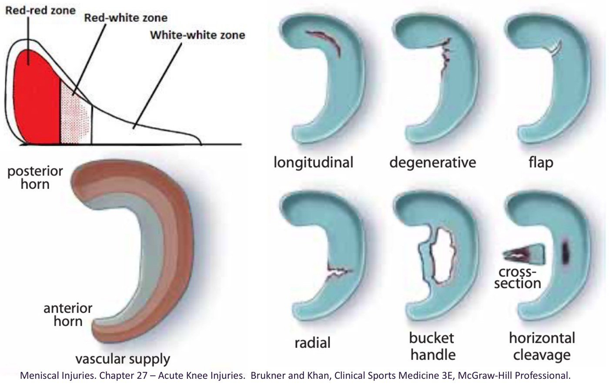
| Treatment | Degenerative tear | Traumatic tear (the young) |
|---|---|---|
| Physio | The mainstay. Active physio: keep or improve range of motion and strengthen the quadriceps and hamstrings, which stabilizes the knee and makes future tears less likely. | Always start here. If they're much better within weeks, no further workup is needed. |
| Medication | Oral over-the-counter drugs are all that's needed; a short NSAID course if there's swelling. An intra-articular corticosteroid can calm the pain enough to allow active physio. | Over-the-counter drugs. An intra-articular steroid isn't a bad idea, depending on age and comorbidities (the slide queries it). |
| Bracing, activity changes | Accommodative, not corrective: they don't fix the tear, but they're reasonable here | Avoid early accommodations in the young, who'd live with them for decades (the slide queries it) |
| Surgery | Depends on the OA. With moderate to severe OA, arthroscopic repair or debridement doesn't help; persistent flares mean a knee arthroplasty, the last resort. With minimal or no OA, arthroscopy is possible, but only after a proper conservative trial, and outcomes aren't great. | Earlier MRI and surgical referral. Repair for red or red–white zone tears, larger tears, bucket-handle and meniscal root tears, and younger patients. Resection (partial meniscectomy) for white-zone and chronic degenerative tears. Meniscal transplantation is also an option. |
| Return to play | — | Variable: 6 weeks to 3 months, depending on meniscectomy versus repair |
This principle holds for nearly every MSK problem. Active physio (the patient does the stretching, range of motion and strengthening) is where the benefit is. Passive physio (ultrasound, TENS, acupuncture, heat) feels nice, but 30–60 minutes later they're back where they started. Its one real role is to settle pain enough to let someone start the active work. Injections play the same supporting part.
The Unhappy Triad
(1) A forced valgus stretches the MCL, which tears from the joint. (2) The medial meniscus is attached to the MCL, so the force carries into it, giving a bucket-handle tear. (3) With the medial side opened, abduction, external rotation and slight flexion load the ACL, which tears. The result, MCL + medial meniscus + ACL, is an extremely significant injury.
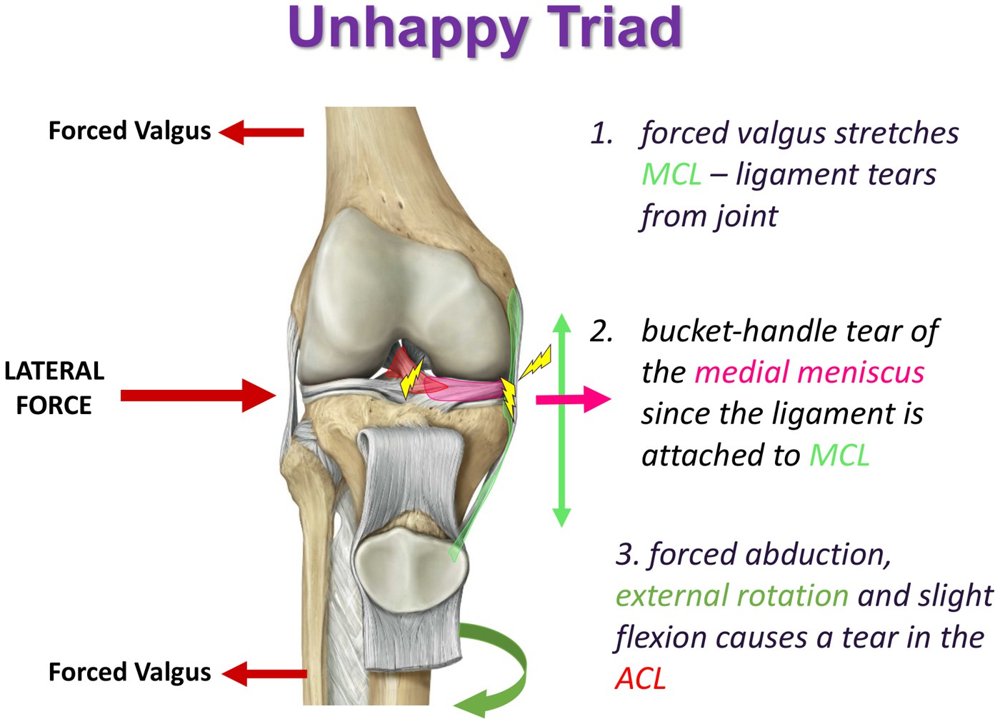
Knowledge check
Which structures are injured in a classic unhappy triad? → the ACL, MCL and medial meniscus. Not the LCL, PCL, lateral meniscus or fibular head.
Built from Drs. Charys Martin and Jordan VanderEnde's “Clinical Approach to the Knee: Part One” module: the recordings (osteology and ligamentous anatomy; ligament injuries; meniscus anatomy and function, with its knowledge-check feedback video; meniscal injuries), the knowledge checks, the 39-slide detailed deck and Dr. Martin's knee notes, which cover Parts 1 and 2. Left out and described in text: the cadaveric photos (beside the posterior capsule and ligament drawings, and the knowledge-check dissection), the sports photos and game videos, and the MRI, stress x-ray and leg photo on the ligament slides. Notes: the cruciate slide writes “taught” for taut. The notes call the tibia's intercondylar area a “fossa”. The recording gives the PCL test as a posterior drawer; the slide adds the sag sign and reverse Lachman. Caption corrections: lateral femoral condyle (“lateral for moral condyle”), intercondylar eminence (“inter consular”, “inter conjola”, “inter control eminence”), medial tibial condyle (“medial Timken out”), hyaline cartilage (“highland cartilage”), aponeurotic extensions (“upper neurotic”, “erotic extensions”), quadriceps femoris (“quadrants for Morris”), semimembranosus (“semi member gnosis”), popliteus (“possibilities”, “property is”, “pop latest”), cadaveric image (“card of Eric image”, “category image”), the PCL is the stronger (“the ACL is quite a bit stronger”), flexion (“inflection”), femur (“fiber”), Lachman (“lockman”), drawer (“draw”), hemarthrosis (“hammer throw”), sag sign (“six”, “segue”), chondral (“conjugal”), reinjury (“reentry”), semitendinosus or gracilis (“semi tender gnosis or chrysalis”), cadaveric (“kind of Eric”), screw-home (“screw on”), medial meniscus (“medium meniscus”), McMurray (“McMurry”), TENS (“intense”, “tennis machine”), debridement (“Brightman”), degenerative (“generic”), meniscal repair (“municipal pair”), meniscectomy (“and asked me”) and the unhappy triad (“unhappy tribe”).